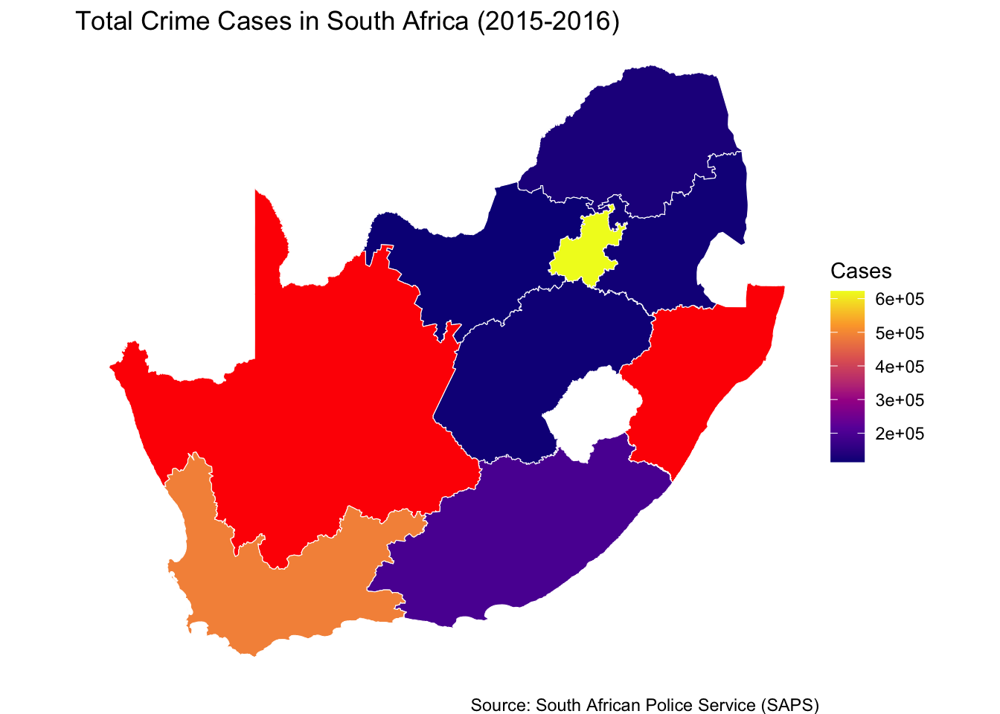

Professional Viz
How did Crime fare by Province in South Africa from 2015 to 2016?
South Africa, with its diverse landscapes and complex social history, has long grappled with issues of crime that impact public safety, economic development, and community well-being. This solo project aims to visualize the distribution of crime across South Africa’s provinces during the 2015–2016 fiscal year using spatial data analysis and data visualization.
Objective:
The primary objective of this research is to provide a clear, intuitive map-based representation of total reported crimes by province.
Code
Reading layer `south_africa_Province_level_1' from data source
`/Users/munyaradzi/Desktop/STAT212/portfolio_mmunyaradzi/data/raw/south_africa_Province_level_1_MAPOG/south_africa_Province_level_1.shp'
using driver `ESRI Shapefile'
Simple feature collection with 9 features and 6 fields
Geometry type: MULTIPOLYGON
Dimension: XY
Bounding box: xmin: 16.45189 ymin: -34.83417 xmax: 32.94498 ymax: -22.12503
Geodetic CRS: WGS 84Simple feature collection with 6 features and 6 fields
Geometry type: MULTIPOLYGON
Dimension: XY
Bounding box: xmin: 22.73574 ymin: -34.21386 xmax: 32.94498 ymax: -22.12503
Geodetic CRS: WGS 84
shape1 shapeiso shapeid shapegroup shapetype
1 Eastern Cape EC 76434192B98113213215773 ZAF ADM1
2 Free State FS 76434192B57942368908249 ZAF ADM1
3 Gauteng GT 76434192B69392740373411 ZAF ADM1
4 KwaZulu-Natal KZ 76434192B26311534340602 ZAF ADM1
5 Limpopo LI 76434192B37104984973577 ZAF ADM1
6 Mpumalanga MP 76434192B92524600968894 ZAF ADM1
shape0 geometry
1 south africa MULTIPOLYGON (((30.19386 -3...
2 south africa MULTIPOLYGON (((27.37735 -3...
3 south africa MULTIPOLYGON (((28.24428 -2...
4 south africa MULTIPOLYGON (((30.19386 -3...
5 south africa MULTIPOLYGON (((28.65157 -2...
6 south africa MULTIPOLYGON (((29.75868 -2...# A tibble: 6 × 14
Province Station Category `2005-2006` `2006-2007` `2007-2008` `2008-2009`
<chr> <chr> <chr> <dbl> <dbl> <dbl> <dbl>
1 Western Cape Cape To… All the… 6692 6341 5966 5187
2 Gauteng Jhb Cen… All the… 6093 4602 3761 3610
3 Western Cape Mitchel… All the… 5341 6093 6316 6803
4 Free State Park Ro… All the… 5108 4282 3834 3316
5 Gauteng Pretori… All the… 5099 4536 3309 2694
6 North West Rustenb… All the… 4239 4173 3398 3388
# ℹ 7 more variables: `2009-2010` <dbl>, `2010-2011` <dbl>, `2011-2012` <dbl>,
# `2012-2013` <dbl>, `2013-2014` <dbl>, `2014-2015` <dbl>, `2015-2016` <dbl>Code
# group by province and create a sum for the entries
crime_filtered <- crime %>%
group_by(Province) %>%
summarise(`2015-2016` = sum(as.numeric(`2015-2016`)))
# Standardize province names and lowercase & remove extra spaces
crime_filtered <- crime_filtered %>%
mutate(Province = tolower(trimws(Province)))
# correct KwaZulu-Natal Kwazulu/Natal mismatch
crime_filtered <- crime_filtered %>%
mutate(Province = ifelse(Province == "kwazulu-natal", "kwazulu/natal", Province))
# rename shape1 to province
map_data <- map_data %>%
rename(Province = shape1) %>%
mutate(Province = tolower(trimws(Province)))Code
# plot
library(ggplot2)
ggplot() +
geom_sf(data = map_data, aes(fill = `2015-2016`), color = "white", size = 0.15) +
scale_fill_viridis_c(option = "plasma", na.value = "red") +
labs(
title = "Total Crime Cases in South Africa (2015-2016)",
fill = "Cases",
caption = "Source: South African Police Service (SAPS)"
) +
theme_void()
Results
The resulting map visually emphasizes disparities in crime totals across provinces:
Gauteng, Western Cape, Northen and KwaZulu-Natal (most of which are densely populated provinces) appear to have higher crime totals, possibly reflecting both population density and urban challenges.
On the other side of the spectrum we have Free State, North West Province, Limpopo and Mpumalanga; most of which are sparsely populated areas with relatively lower crime totals, though this does not necessarily imply safety, as underreporting and other factors might influence statistics